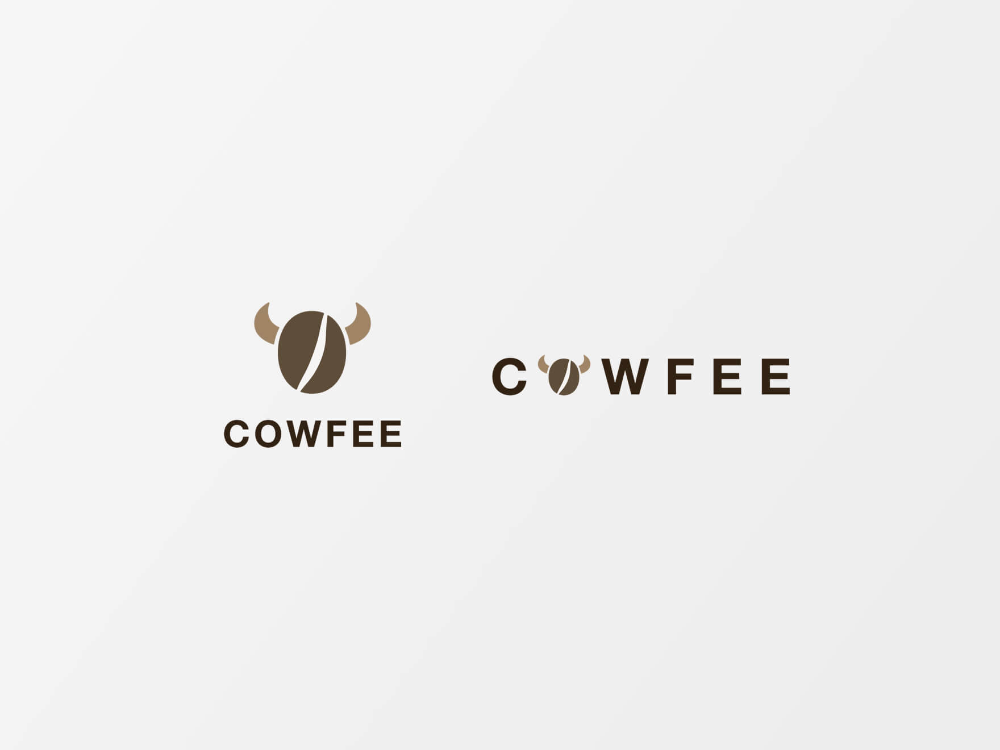
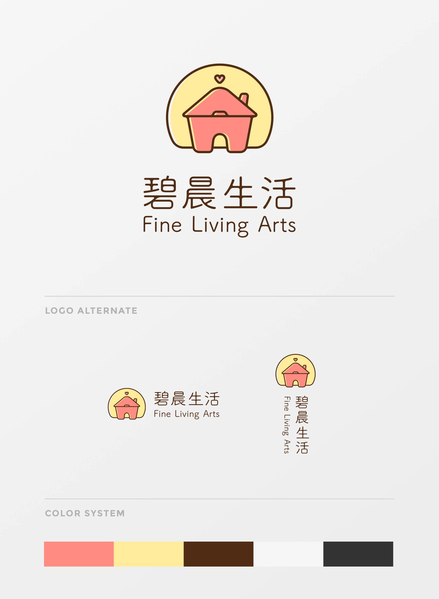

LOGO
Logo Design Collection

NCKUID Forum - Adjustment (2015)
NCKUID Forum is managed by webmaster in Student Association, Department of Industrial Design. I am one of the webmaster in 2015. We adjusted some details of the logo then, making it more legible. Sometimes we changed the forum banner when festival or events making the forum attracting and fun.
COWFEE - Concept (2015)
This is designed for a fictitious company sales milk flavor cookies and coffee. I mix the image of cow and coffee bean to create the logo. Taking the deep brown of coffee, the white of milk and the brown of latte as color palette.
Fine Living Arts - Proposal (2017.12)
This is a logo design proposal, hoping to present the idea of the 4 chinese words - "碧晨生活", which means living with happiness, love and sunshine.

LIBRE (2018.03)
LIBRE is a company selling modular furniture made by wood plates and aluminum brackets. Hoping their buyers can happily DIY the modular parts into strutures they want. I take the plates, brackets and DIY as my idea and create the logo.